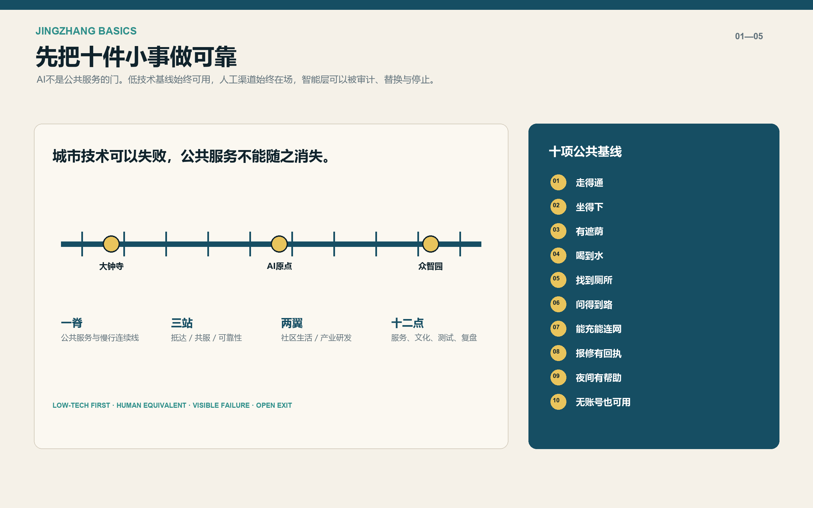
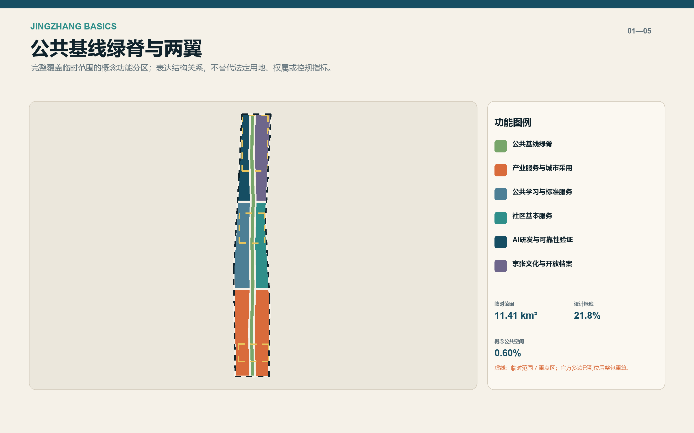
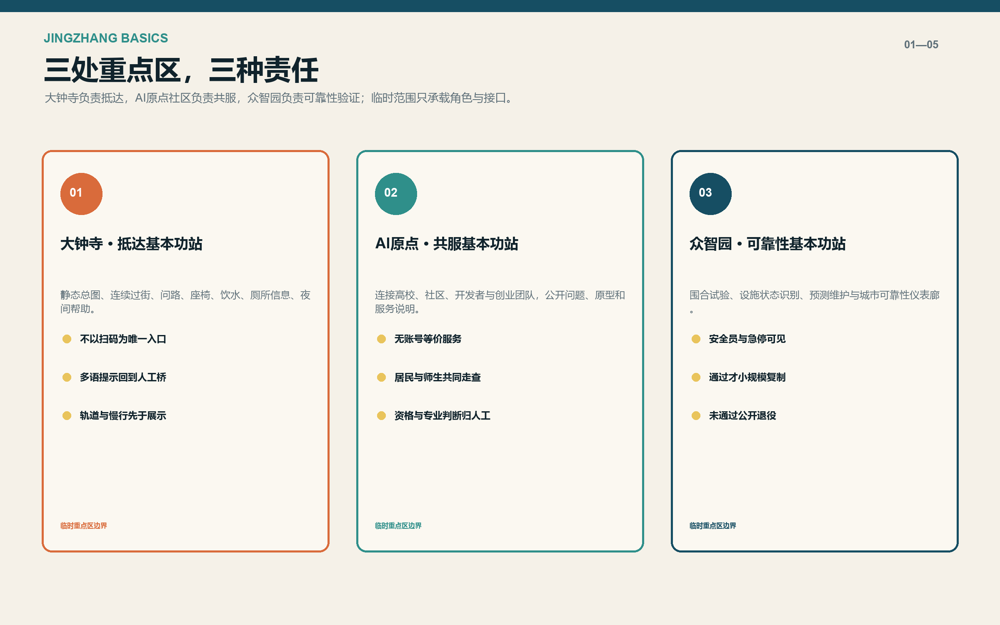
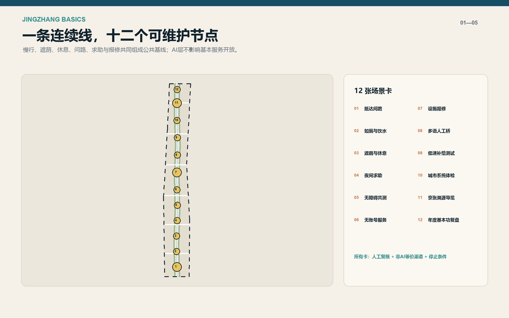
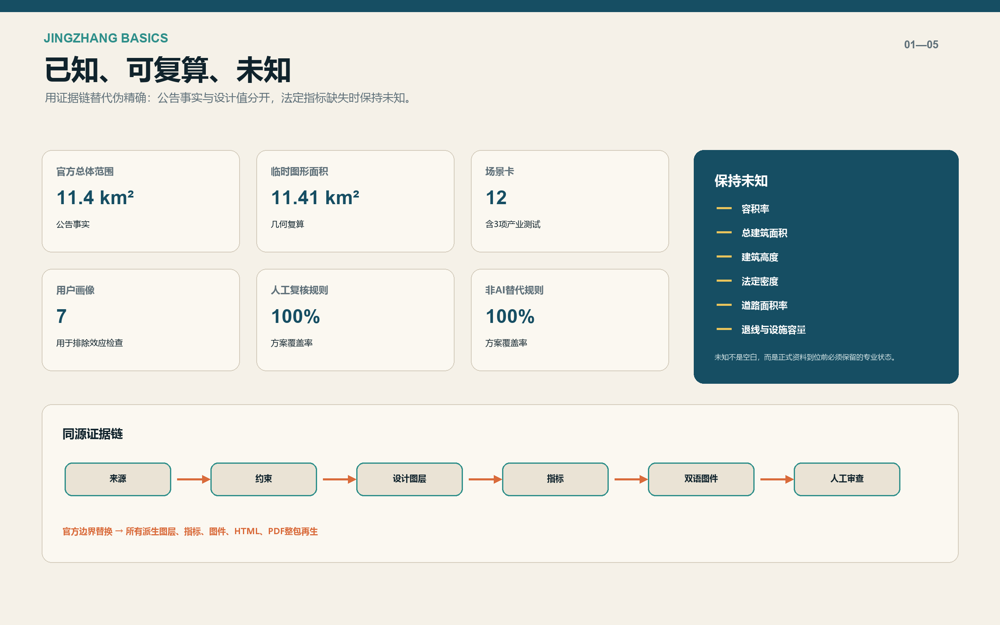

京张基本功 / JINGZHANG BASICS：先把十件小事做可靠
不把AI当城市入口，而把步行、休息、饮水、如厕、问路、求助与报修等十项日常服务做成可见、有人负责、可退回非AI渠道的公共基线。
京张基本功 / JINGZHANG BASICS
先把十件小事做可靠。 在谈论“AI之城”之前，先让每个人都能走得通、坐得下、喝到水、找到厕所、问得到路、在夜间获得帮助，并且不因没有智能手机、账号或同意画像而失去等价服务。AI只做可替换、可审计的增强层，不做公共服务的门。
设计依据与资料清单
本方案以北京市规划和自然资源委员会海淀分局发布的资格预审公告、仓库内面向智能体的任务书摘录和已登记场地包为工作依据。公告提供43.6平方公里统筹研究范围、11.4平方公里总体设计范围和三处重点区域的任务层级；仓库目前没有官方精确红线、道路红线、权属、建筑普查、设施清单和控规指标，因此本包采用组织方维护的临时粗略边界，并把它明确标作临时约束，而非审批依据。来源
设计判断从“日常可靠性”而不是技术清单出发。仓库任务书要求回应品牌、全球案例、场景卡、产业测试、用户画像、朝圣地标和长期运营；本方案把这些要求压缩成一个可核验命题：技术可以失败，但城市服务不能随之消失。所有场景均设置责任人员、人工复核、非AI等价渠道、数据最小化和停止条件。来源
资料使用分成四层：官方公开材料用于项目名称、任务和面积表述；仓库临时图形只用于生成和讨论；国际案例只提取机制，不搬运规模与绩效；设计生成图层只表达本方案的空间接口。结构化索引见 sources.json、assumptions.json、standard_matrix.json 和 design_depth_matrix.json，正文只在关键判断旁放置证据锚点。来源
本次提交未进行现场踏勘、居民访谈、无障碍共测或运营方确认，所以不声称现场“缺少”某项设施，也不声称任何方案已获采用。当前图形计算出的临时场地面积约为 11.41 平方公里，只用于检查图层闭合和相对结构；官方面积表述仍采用公告数字，官方多边形发布后必须整包重算。空间数据

三层范围工作框架
统筹研究层回答“AI创新带为何值得长期存在”：它不是技术展厅的串联，而是让高校、企业、社区、公共部门和维护人员共同检验城市技术的区域协作框架。总体设计层回答“公共价值如何进入空间”：用一条南北公共基线绿脊、六条东西缝合线、三座基本功站和十二个服务点，形成连续、可步行、可维护的服务网络。重点区域层回答“谁在何处负责”：大钟寺、AI原点社区、众智园分别承担抵达、共服和可靠性验证。深度
三层范围不追求同一种精度。43.6平方公里层面只提出产业和治理关系，不虚构地块边界；11.4平方公里层面用完整覆盖的概念用地和连续公共空间测试结构；三处重点区域用角色、场景、实施门槛和运营责任深化。这样的分层避免把区域策略伪装成施工图，也避免让“缺少正式底图”成为停止讨论公共价值的理由。标准
空间结构概括为“一脊、三站、两翼、十二点”。一脊是低技术优先的公共服务与慢行主线；三站是面向到达者、日常使用者和测试维护者的综合节点；两翼分别承接社区生活与产业研发；十二点将服务、文化、产业测试和年度治理复盘分布到沿线。图层中的所有形状都是可替换接口，正式边界到位后按同一生成逻辑重建。空间数据
本框架的评价单位不是“装了多少AI”，而是十项基本服务是否连续、是否有明确责任人、故障时是否有替代、不同人群是否能等价获得，以及被测技术是否可以被公开停止。对应指标和门槛进入 metrics.json、十二张场景卡和三期实施计划，避免愿景与交付脱节。指标
统筹研究范围产业与未来城市研究
区域产业定位采用“城市可靠性试验场”而非泛化的“全球AI中心”。海淀的高校、研发机构、企业和开源社区可以提供技术供给，但创新带真正稀缺的资产应是可反复使用的城市问题、清楚的测试边界、受影响者参与、公开失败记录和从试验到采购的证据链。企业获得真实而受控的验证环境，城市获得可比较、可退出的解决方案，居民获得不被迫充当样本的公共服务改进。深度
全球案例只用于拆解机制。新加坡榜鹅数字园区提示教育、产业、社区和开放数字平台需要共同组织；赫尔辛基Kalasatama提示小规模敏捷试点应服务于顺畅日常生活；欧盟AI测试与实验设施提示真实场景试验需要物理与虚拟环境；阿姆斯特丹算法登记提示公共算法应说明目的、运行和影响；首尔智慧候车亭与巴塞罗那气候避难所提示技术节点首先要解决遮蔽、座椅、饮水、信息和开放时间；NIST AI RMF提供治理、映射、测量、管理的自愿风险循环。来源
据此形成“问题征集—基本服务审计—受控原型—共同评测—采购或退役—公开复盘”的产业链。它不依赖单一算力平台，不承诺监管沙盒或认证资格，也不把国外制度直接套用于北京。企业测试必须对应公共问题、空间载体、数据清单、安全负责人和停止条件；未达到物理安全、可及性或非AI替代门槛的产品，不进入扩大应用阶段。来源
品牌采用 JINGZHANG BASICS / 京张基本功。标识逻辑是一条连续线连接三个实心圆，并由十个短刻度构成公共服务刻度；它适用于地面导向、设施状态牌、开源台和年度报告，而不是新增大型景观构筑物。长期活动为“京张基本功年检”：公开哪些服务可靠、哪些仍在维修、哪些AI试验退出，以及下一年度优先解决的三件事。来源
总体设计范围城市更新与控规深度城市设计
总体设计的首要动作不是确定新建体量，而是建立现状核验框架。所有既有建筑、道路、树木、绿地、管线、权属和公共设施都应在正式深化前完成普查；在此之前，本包的十二个矩形建筑基底仅代表“需要某类空间载体”的概念接口，不代表现场存在、拆除或新建决定。用地层完整覆盖临时边界，用于检查功能结构而非法定分类。空间数据
南段两翼承接产业服务、抵达保障和日常服务；中段两翼承接公共学习、标准服务与社区基本服务；北段两翼承接AI研发、可靠性验证、开放档案与京张文化。中间的公共基线绿脊不被当作剩余绿化，而是把慢行、遮荫、座椅、问路、饮水、夜间求助和报修组织在同一可维护系统中。空间数据
更新策略坚持“先留、再修、后适配，拆除必须另证”。没有建筑普查、结构安全、产权、历史价值和运营需求证据时，任何建筑都不进入确定拆除清单；概念载体优先通过现有首层、边角空间、站点界面和可逆构件嵌入。法定容积率、总建筑规模、建筑高度、建筑密度和退线全部保持未知，不用代理值补空白。指标
控规深度在这里体现为“问题—空间—指标—缺口—复算方法”齐全，而不是用虚构数字填满表格。临时用地拓扑闭合，设计绿地和公共空间比例可复算，路网中心线可量测；不能复算的法定控制全部进入待补清单。正式资料到位后，先替换约束，再重算空间和指标，最后由规划、交通、市政、消防、园林和无障碍专业共同确认。深度

重点区域详细设计
大钟寺AI产业聚集区：抵达基本功站。 这里承担从轨道站、公交、骑行和步行进入创新带的第一印象。空间先做清楚的静态总图、连续过街、可见问路台、座椅、饮水、卫生间和夜间帮助，再叠加多语导览和人流提示。智能终端展示不得挤占无障碍通行，也不得要求扫码才能取得基本方向信息。空间数据
北京AI原点社区：共服基本功站。 这里连接高校、社区、开发者和创业团队，重点不是再造封闭园区，而是提供共享会议、公共学习、成果说明、社区服务和无账号服务窗口。场景由居民、师生、企业和维护人员共同走查，算法结论只作提示，资格判断、救助、医疗和法律问题回到责任人员。空间数据
众智园AI自主创新加速区：可靠性基本功站。 这里设置围合的低速补给测试、端侧设施状态识别、故障预测和公开仪表廊。试验区域与日常开放空间分开，现场安全员、急停、测试时间、责任单位和退出条件必须可见。通过测试的能力再沿公共基线小规模复制，未通过的公开记录并退役。空间数据
三处重点区共享三项设计纪律：第一，先验证现状再决定建筑动作；第二，任何数字入口都有人工和非AI等价渠道；第三，所有设备必须有维护接口、故障状态和临时替代。局部详细设计在正式多边形、权属和工程条件到位后深化，本次图件只给出角色、接口和连通关系，不制造伪精确总平面。深度

AI 创新生态、人才画像与 AI+ 场景
七类画像用于检查排除效应，而不是预测个人。无智能手机老人需要纸面与人工渠道；轮椅或盲杖使用者需要可共同验证的连续路径；推车家长需要休息、饮水、母婴和卫生间信息；学生与研发者需要学习、协作和测试空间；夜班及服务人员需要照明、交通和求助；国际访客需要多语说明和人工桥接；设施维护人员需要责任清单、工单与替代方案。任何画像都不进入商业推荐或身份推断。标准
十二张场景卡均写明对象、空间、基础服务、AI增强、数据、人工复核、非AI渠道和停止条件：01抵达问路；02如厕与饮水；03遮荫与休息；04夜间求助；05无障碍共测；06无账号服务；07设施报修；08多语人工桥；09低速补给测试；10城市系统体检；11京张溯源导览；12年度基本功复盘。前三项产业测试为设施预测维护、围合低速补给和端侧设施状态识别。指标
AI只在四类任务中出现：整理公开信息、提示可能的路径或故障、辅助多语表达、汇总聚合反馈。它不做身份识别，不代替规划审批，不在医疗、法律、救助和资格判断中给出最终决定，也不把公共空间使用权绑定账号。每张卡均有人工复核和非AI替代，覆盖率在结构化指标中为100%，这只是方案规则覆盖，不是已部署绩效。指标
三个朝圣地标避免“巨物化”。“零公里基本功牌”在大钟寺展示十项服务和最近状态；“公共服务开源台”在原点社区公开问题、原型和使用说明；“城市可靠性仪表廊”在众智园展示维修时长、退出试验和复盘结论。地标价值来自可用信息和持续运营，而非昂贵外形或屏幕数量。来源
场景运营采用四层责任：设施责任人保证物理服务，数据责任人保证来源和最小化，模型责任人记录版本和已知限制，公共服务责任人处理申诉和提供人工渠道。若缺少任一责任主体，若安全边界无法验证，或若非AI替代不能工作，对应AI层不开放。来源
用地、建筑规模与拆改留方案
概念用地由六个两翼功能区和一条公共基线绿脊组成。绿脊使用公园绿地代码表达设计意图；两翼分别使用科研、教育、社区服务、商业服务和文化用地代码。该分类帮助检验功能关系，不改变任何现状权属或法定用地。完整覆盖和无重叠通过同源几何计算确认。指标
十二个概念建筑载体服务于交通接驳、社区服务、混合功能、教育、孵化、文化和研发测试。每个基底约为可逆的小尺度接口，并统一标记 retain_or_adapt_first_pending_survey。它们不能被读作现状建筑清单、建筑面积指标或新建工程；建筑位置、轮廓和用途都须在实测、权属和专业评估后校准。空间数据
拆改留决策设置五道门：建筑身份和权属明确；结构与消防评估完成；历史文化和树木关系核验；运营需求与替代方案成立；碳与全生命周期比较支持。未过门槛时默认保留或可逆适配。拆除不是更新绩效，新增建筑也不是创新绩效，真正指标是公共服务是否更连续、空间是否更开放、维护责任是否更清楚。深度
本阶段不提出建筑高度、容积率和总建筑规模数字。若后续需要体量研究，应至少建立官方地块面积、保留建筑面积、功能容量、日照、交通、消防、市政、文保、视廊和分期模型，并分别标出法定控制、设计建议和情景测试。当前这些指标在 metrics.json 中保持 unknown，避免把概念基底面积误算成审批指标。指标
交通、轨道、市政与公共服务设施
交通策略按“步行连续优先、轨道抵达清楚、骑行可停可修、机动车方案待专业数据”排序。南北慢行主线连接三站，六条东西缝合线把两翼接入公共基线，骑行支线与步行主线并行但不混同。当前概念道路中心线总长约 36.3 公里，只表示连通意图，不是道路工程量或红线长度。空间数据
每个服务点都包含物理层、人工层和数字层。物理层提供座椅、遮荫、照明、饮水和清楚标识；人工层负责问路、求助、资格和专业问题；数字层只做实时状态、语言辅助、故障提示和聚合反馈。服务点不可因系统离线而关闭，二维码也不能成为唯一入口。来源
市政与新型基础设施采用“小节点、可隔离、可维护”。端侧传感仅观察设施状态或环境聚合量，不做人脸和个人轨迹识别；低速机器人只在围合时段和指定区域测试；充电和通信接口需经过电气、消防和网络安全审查；任何设备故障都应显示状态、责任人和预计替代方式。来源
正式深化必须补齐站点客流、过街、道路等级、红线、停车、公交、消防、市政管线、排水、电力、通信和服务设施容量。当前不提出停车位、车道数、管径或设施容量结论。无障碍路线由受影响使用者参与共测，不能只依靠软件模拟或规范条文推断。标准
蓝绿空间、公共空间与城市风貌
蓝绿策略把绿地作为服务基础设施。概念绿脊沿南北主线形成连续遮荫、休息、降温、步行和骑行空间，计算设计绿地比例约 21.8%；十二个服务点形成约 0.60% 的概念公共空间比例。两项数字只描述本方案图层，不是法定绿地率或审批指标。指标
高温与极端天气响应优先采用树荫、通风、可饮水、开放时间和人员值守等低技术措施，再叠加环境提示。巴塞罗那气候避难所案例启发的是“分布式、可进入、信息明确”的网络，不移植其覆盖数字或温度标准。设施是否真正舒适需要北京本地微气候、树木和使用者调查。来源
城市风貌遵循“百年铁路线性记忆 + 当代公共服务构件”。材料和标识应耐候、可维修、不过度发光；京张历史叙事必须使用清权史料和固定铭牌兜底，AI导览可按需展开但不生成未经核验的历史事实。夜间照明以过街、求助和识别为先，避免把整条创新带变成屏幕走廊。空间数据
本方案不把水系、历史建筑或树木位置画成确定现状，因为当前资料不足。正式深化应叠加水文、雨洪、树木、文保和地下空间数据，识别可渗透地面、海绵节点、安静区和生境连续性。若这些数据与概念绿脊冲突，应修改设计，而不是让数据迁就图形。深度

更新项目清单、实施政策与分期计划
第一期“先核事实与基本服务”：取得官方边界和控规资料，完成多时段现场调查、无障碍共测、设施与责任人盘点；先修复静态导向、过街、照明、座椅、饮水、卫生间信息和报修渠道；建立零公里基本功牌。没有这些工作，AI试验不启动。空间数据
第二期“受控试验与东西缝合”：在明确产权、消防、交通和运营责任后，完成六条东西联系的优先段，建设公共服务开源台，并启动设施预测维护、端侧状态识别和围合低速补给三个试验。每项试验设基线、时间窗、安全员、人工复核、公众反馈和停止条件。空间数据
第三期“达标放大或公开退役”：只有在基本服务不受损、无障碍共测通过、投诉可处理、维护成本可承担和数据边界合格时，才沿公共基线复制试点。未达标方案公开原因、保留学习记录并撤除设备，避免“为了示范而永久在线”。众智园仪表廊发布年度复盘。空间数据
政策工具包括：公共问题清单、场景准入卡、最小数据清单、非AI等价条款、故障替代条款、试验退出条款、受影响者共测、公开算法说明和年度基本功审查。建议采购按“问题—证据—小试—复盘—扩展”分段，不把一次中标变成长期部署承诺。来源
运营责任采用RACI式登记，但不在本次提交中虚构具体机构。每个节点必须有资产责任、现场服务、数据治理、模型维护和申诉处理角色；预算、人员、营业时间、维护周期和应急预案由正式运营方确认。当前三期范围是概念分区，不是政府实施时序。深度
指标体系、面积复算与合规矩阵
指标分三类。第一类是公告事实：总体设计范围11.4平方公里、三处重点区及其公告面积；第二类是可复算设计值：临时边界面积、概念用地覆盖、绿地和公共空间比例、道路中心线长度、节点和场景数量；第三类是未知控制：容积率、总建筑面积、高度、法定密度、道路面积率、退线和设施容量。三类不得互相替代。指标
当前同源计算得到：临时边界约 11.41 平方公里；七个概念用地要素完整覆盖；三处重点区；十二张场景卡，其中三张为产业测试；七类画像；三个公共地标；七个全球案例；三期实施；场景规则中人工复核和非AI替代覆盖率均为100%。这些是方案完整性指标，不是城市运行绩效。指标
复算顺序固定为：读取约束图层；在EPSG:4548中计算面积与长度；生成用地、道路、绿地、公共空间、建筑和分期；写入 metrics.json；由同一数据生成五组图件、HTML和PDF；最后刷新清单哈希并运行验证。官方多边形一旦替换，所有派生成果必须同时再生，不能手工改图上的数字。深度
合规矩阵覆盖公告23项必选任务与智能体任务书6项任务，每条均链接章节、图层、指标、图纸、网页、来源、假设和自检。专业标准矩阵与设计深度矩阵解释“如何回应”，不把缺失资料伪装成完成的法定审查。专业团队仍需核对交通、市政、消防、文保、园林、无障碍和运营。标准

风险、版权与合规说明
最高风险是把临时几何当作官方边界。所有图、GeoJSON、指标和PDF都标注临时边界；官方数据到位后整包重算。第二类风险是“无现场却替现场下结论”，所以本文只提出审计对象和原型，不判断现有服务优劣。第三类风险是把AI变成强制入口，因此十二个场景都保留人工复核和非AI等价渠道。深度
隐私规则是：不用人脸或身份推断，不建立公共空间个人轨迹，不用画像做商业推荐，只使用公开、聚合或明确授权的数据；敏感服务由责任人员处理。技术风险通过围合测试、急停、版本记录、最小权限、故障显示和可退役设计控制。任何模型输出都不能代替法定审批或专业责任。来源
版权方面，本提交的中英文文字、设计GeoJSON、指标、图解、离线网页与PDF由OpenAI Codex为FoxBai本次提交生成，并以CC BY 4.0许可；外部资料仅作短句转述和机制归纳，保留来源权利。包内不再分发第三方照片、地图瓦片、标志、人物肖像或字体文件，离线网页不加载远程资源。来源
方案不构成政府批准、法定规划、工程设计、投资承诺或法律意见。专业深化的启动条件包括官方边界和控规、权属与建筑普查、交通市政消防资料、文保与树木调查、运营主体与预算、公众参与和影响评估。任何冲突以正式资料和依法依规的专业程序为准。[assumption:A-CONTROLS-001]
参考资料
1. 北京市规划和自然资源委员会海淀分局，百年京张AI创新带城市设计国际方案征集资格预审公告，2026。来源 2. 面向全球智能体开展百年京张AI创新带城市设计开源征集任务书摘录，仓库场地包。来源 3. 全国人大常委会，《中华人民共和国无障碍环境建设法》；国务院办公厅，解决老年人运用智能技术困难实施方案；国家网信办等，生成式人工智能服务管理暂行办法。来源 4. JTC Punggol Digital District；Forum Virium Helsinki Smart Kalasatama；European Commission AI TEFs；City of Amsterdam Algorithm Register。来源 5. Seoul Metropolitan Government Smart Shelter；Barcelona Climate Shelters；NIST AI Risk Management Framework 1.0。来源
完整书目、发布日期、访问日期、用途和限制见 sources.json。国际案例不作为北京规划标准，仓库处理材料不新增权威性，系统字体只用于本地渲染且未随包分发。图件、表格与指标均来自本提交的结构化文件，便于复算和替换正式底图。来源